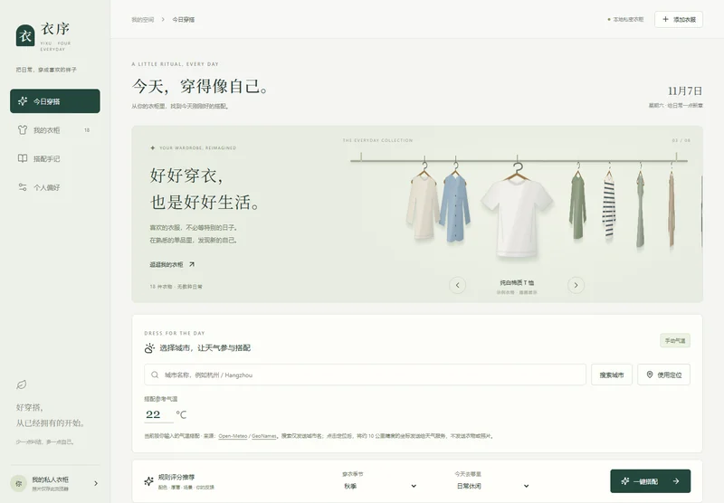
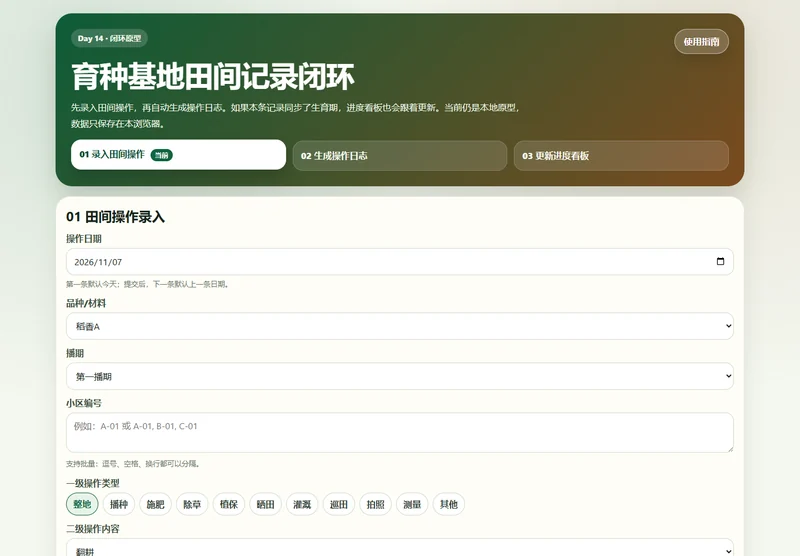
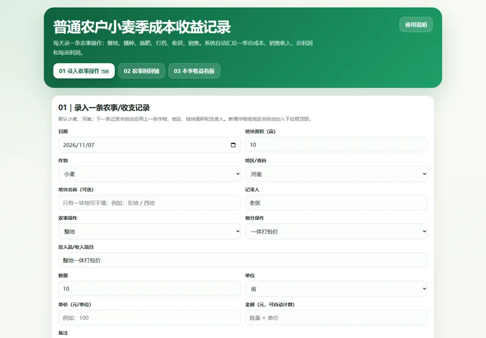
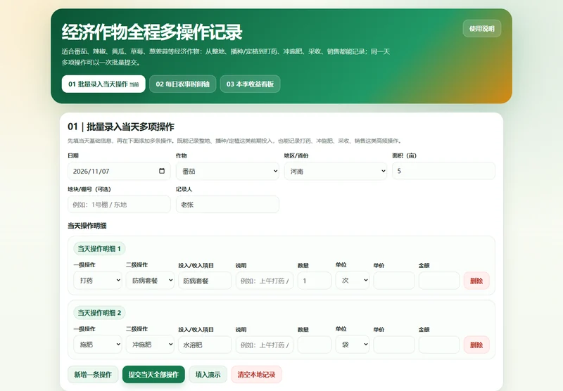
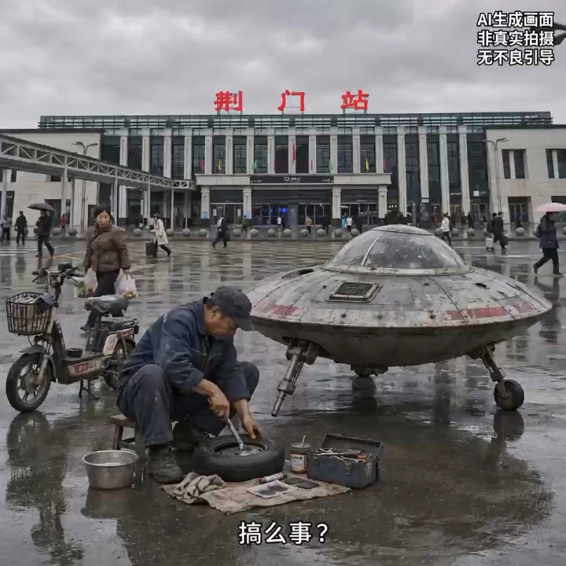
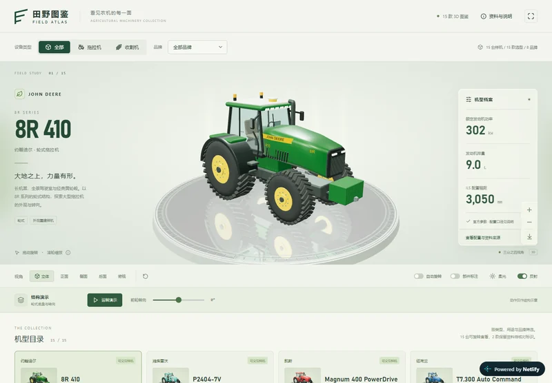
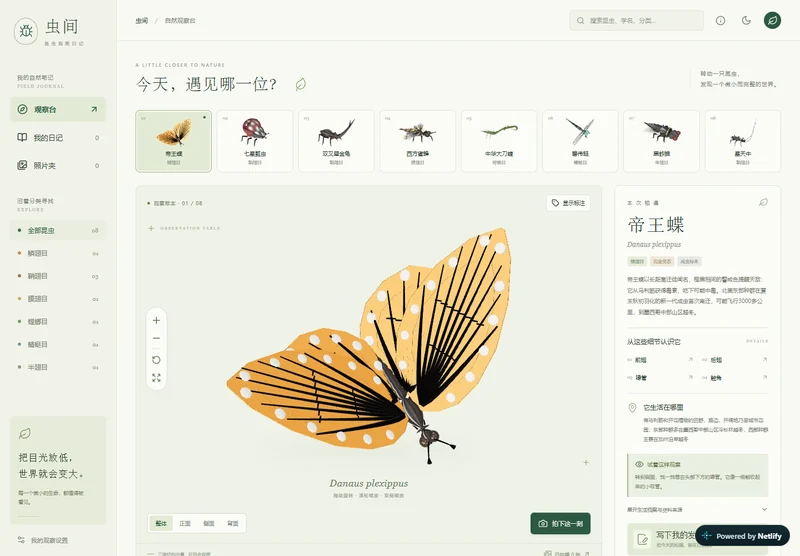
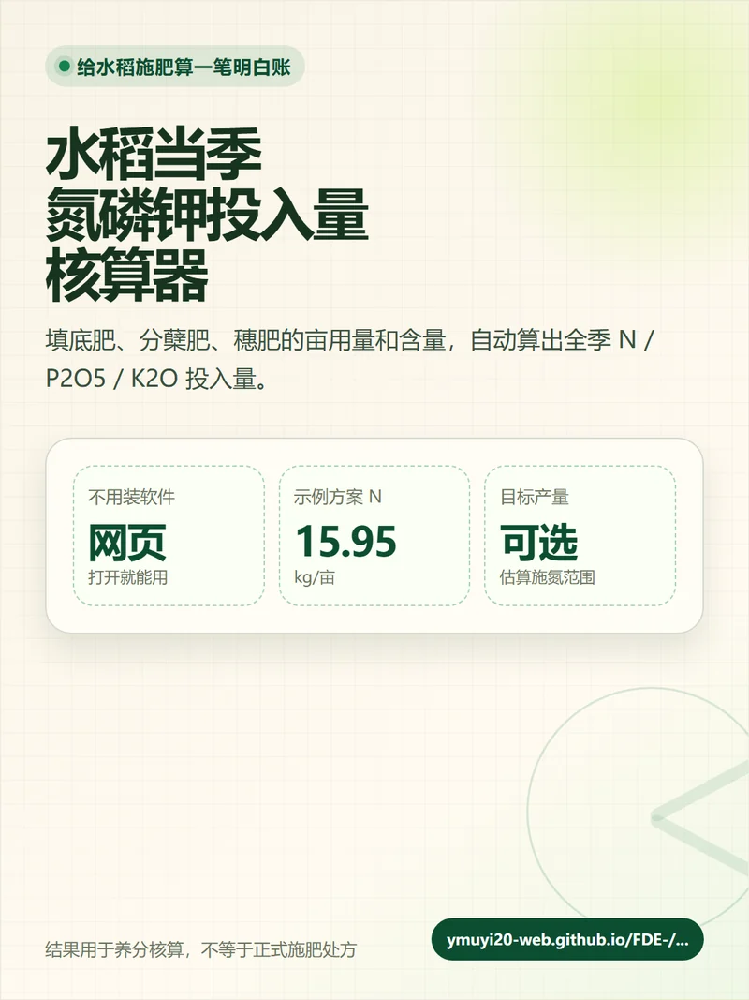

洋丰神农慧 · 农业小程序初版
把问答、地块、农事计划与种植工具组织在一起。
从田野到数字世界
AGRICULTURE × AI
你好，我是杨其琛。有农业一线经验，也用 AI 把想法做成作品。
向下探索 ↓做过的事，比标签更具体
从应用系统、业务工具，到三维与视觉内容。
找到与你的需求相近的作品，直接体验。
先看精选，也可以按类型查看全部 14 项作品。
把问答、地块、农事计划与种植工具组织在一起。
从基地总览，到大田监测与温室管理。
从数据导入、规则检查到复核后批量生成，让重复填报更有条理。

生活应用 · 已有在线版本↗从已有的衣服里，找到今天喜欢的搭配。
先做独立素材，再组装可继续修改的科研页面。

直接体验 · 田间记录原型↗品种、播期、小区：从田间录入到进度看板。

直接体验 · 大田单季账本↗记下农事与投入，算清一季的成本和收益。

直接体验 · 经济作物账本↗一天多项操作、多次采收销售，都有记录。

最新作品 · AI视频 · 50秒↗把熟悉的城市街头，变成有点野的科幻日常。

交互网页↗让农机结构与工作方式更直观。

交互网页↗换个视角，发现一只昆虫的细节。
三维画面、受力标注与公式一起讲解。

网页工具↗把各阶段的肥料用量，换成清楚的数字。
把一个种植问题，讲成一段有趣的故事。
也可以按应用系统、业务工具、三维交互和视觉内容筛选。
作品与 AI 协作完成，包含个人探索与工作场景实践；详情说明本人参与内容、完成状态和展示范围。
从你的需求出发
先说想解决什么问题。
我们一起确认做法与交付范围。
把目标、使用人和操作流程说清楚，再从能验证想法的第一版开始。
可交付：网页、小程序初版或交互原型；部署与源文件范围另行确认。
先梳理输入、规则、人工核对与输出，把重复步骤组织成可使用的工具。
可交付：轻量网页或桌面工具、约定格式的导出文件与使用说明。
围绕受众组织文字、示意图、版式或交互演示，保留专业表达的准确性。
可交付：PPT、插图、展板或三维交互演示；可编辑范围提前说明。
从用途、核心创意与素材出发，讨论画面、节奏和成片形式。
可交付：约定规格的视频成片；脚本、配音与源素材范围按项目确认。
关于我 · 杨其琛
从农业相关专业学习，到农场一线，再到智慧农业研究与应用，我一直在尝试把专业知识放回真实问题里。
现在，我也在学习和使用 AI，把需求变成工具，把知识变成直观的作品。作品里的每一次修改，都来自一个更具体的问题。
参与施肥模型应用与平台需求对接、展示馆建设协调、基地方案编制，衔接业务、工具与实施。
参与基地生产管理、分区种植方案、项目前期调研与技术支持，积累智慧农业落地经验。
独立负责约 2,692 亩水稻小麦轮作生产，参与万亩级种植方案与农资预算编制。
合作怎么开始
想法不完整也可以。
先说你希望解决的问题。
说说用途、受众和现有素材；有参考作品也可以一起发来。
一起明确功能、内容与优先级，必要时先做小范围验证。
确认交付内容、费用、排期、修改范围，以及源文件和部署安排。
按约定阶段看效果、收反馈，再继续完善。
交付约定成果与必要说明，核对使用方式和后续维护安排。
可以。先说现在遇到什么问题、谁会使用，以及希望最后能做成什么。我们先判断适合做工具、内容，还是先做一个小原型。
先列出现有资料和缺少的内容。哪些由你提供，哪些需要我协助制作或补充，会在确认范围时说清楚。
依据需求、复杂度、素材准备情况和交付形式具体沟通。开始前确认，不在需求还不清楚时承诺固定价格或完成时间。
可以讨论，并写进交付约定。图片、PPT、网页和桌面工具的可编辑范围不同；服务器、第三方接口、后续维护与费用也需分别确认。
一个需求，或一个值得一起做的想法
想法还不完整也可以，先说希望解决什么问题。
有明确委托，或想找个人一起探索，都欢迎来聊。
先聊目标与素材，再确认范围、排期和费用。